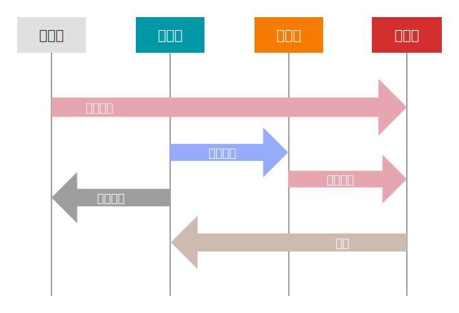

管理暂存区
本节部分内容参考自 Pro Git 和 git-recipes，在原文基础上有一定修改。
在开始之前，先上一张图：

看完这张图，我相信你已经懂了。你可以跳过下面的内容继续看下一节了。
文件的状态变化周期
工作目录下的每一个文件都不外乎两种状态：已跟踪 (tracked) 或 未跟踪 (untracked)。已跟踪的文件是指那些被纳入了版本控制的文件，在上一次快照中有它们的记录，在工作一段时间后，它们的状态可能是未修改 (unmodified)，已修改 (modified) 或已暂存 (staged)。简而言之，已跟踪的文件就是 Git 已经知道的文件。
工作目录中除已跟踪文件外的其它所有文件都属于未跟踪文件，它们既不存在于上次快照的记录中，也没有被放入暂存区。初次克隆某个仓库的时候，工作目录中的所有文件都属于已跟踪文件，并处于未修改状态，因为 Git 刚刚签出了它们，而你尚未编辑过任何东西。
编辑过某些文件之后，由于自上次提交后你对它们做了修改，Git 将它们标记为已修改文件。在工作时，你可以选择性地将这些修改过的文件放入暂存区，然后提交所有已暂存的修改，如此反复。
总结一下，在 Git 中，正常的文件状态变化周期是：在已跟踪的三种状态（未修改、已修改、已暂存）中不断循环，或者进入和退出未跟踪状态。
查看文件状态
git status
git status 命令显示工作目录和暂存区的状态。你可以看到哪些更改被暂存了，哪些还没有，以及哪些还未被 Git 追踪。
$ git status
On branch 管理暂存区
Changes to be committed:
(use "git restore --staged <file>..." to unstage)
new file: src/储存库/Git-文件状态.svg
Changes not staged for commit:
(use "git add <file>..." to update what will be committed)
(use "git restore <file>..." to discard changes in working directory)
modified: src/SUMMARY.md
deleted: test.txt
Untracked files:
(use "git add <file>..." to include in what will be committed)
src/储存库/管理暂存区.md
no changes added to commit (use "git add" and/or "git commit -a")
这就是一个典型的 git status 的输出，它显示了哪些文件是已暂存的，哪些文件是已修改的，哪些文件是未跟踪的。
状态简览
git status 命令的输出十分详细，但其用语有些繁琐。Git 有一个选项可以帮你缩短状态命令的输出，这样可以以简洁的方式查看更改。如果你使用 git status -s 命令或 git status --short 命令，你将得到一种格式更为紧凑的输出。
$ git status -s
M README
MM Rakefile
A lib/git.rb
M lib/simplegit.rb
?? LICENSE.txt
新添加的未跟踪文件前面有 ?? 标记，新添加到暂存区中的文件前面有 A 标记，修改过的文件前面有 M 标记。输出中有两栏，左栏指明了暂存区的状态，右栏指明了工作区的状态。例如，上面的状态报告显示： README 文件在工作区已修改但尚未暂存，而 lib/simplegit.rb 文件已修改且已暂存。Rakefile 文件已修改，暂存后又作了修改，因此该文件的修改中既有已暂存的部分，又有未暂存的部分。
暂存新文件
git add
git add 命令将文件提交到暂存区。使用这个命令提交的文件，会直接变成已暂存的状态。最开始的那张图上，所有指向「已暂存」的箭头，都是通过 git add 命令实现的。
git add 的另一个作用是将在工作目录中删除的文件在暂存区标记为已删除。当 Git 发现 git add 提交的文件在暂存区或储存库中存在，而在工作目录中不存在时，会将一条删除记录添加到暂存区，表示该文件已被删除。
当 git add 作用于目录时，Git 会对目录中所有的文件递归地应用 git add 的功能。所以 git add . 命令可以一次性将工作目录中所有的新增、修改、删除的文件都提交到暂存区。
详细用法
点击展开
git add <file>
将 <file> 中的更改加入下次提交的缓存。
git add <directory>
将 <directory> 下的更改加入下次提交的缓存。
git add -i
开始交互式的缓存，你可以选择文件的一部分加入到下次提交缓存。它会向你展示一堆更改，等待你输入一个命令。y 将这块更改加入缓存，n 忽略这块更改，s 将它分割成更小的块，e 手动编辑这块更改，以及 q 退出。
git rm
git rm 命令用于删除工作目录或暂存区中的文件。它可以将删除记录写入暂存区，或者将文件从暂存区删除。
git rm 是安全的。只有当 Git 确信删除操作是可恢复的时候，才会直接执行删除操作。比如说，如果试图 git rm 一个已修改的文件，Git 就会给出提醒，当然你可以用 -f 无视这一安全性，强行删除一个已修改的文件。
如果你想保留工作目录中的文件，但是删除对应暂存区中的文件，请使用 --cached 选项。为什么会有这种奇怪的需求呢？假设这样一种场景，你忘记了添加 .gitignore 文件，不小心把很多本应忽略的文件加到了暂存区，这时候就需要这里介绍的做法了。
git mv
不像其它的 VCS 系统，Git 并不显式跟踪文件移动操作。如果在 Git 中重命名了某个文件，仓库中存储的元数据并不会体现出这是一次改名操作。不过 Git 非常聪明，它会推断出究竟发生了什么。
你依然可以使用 git mv file_from file_to 对文件改名。它会恰如预期般正常工作。实际上，即便此时查看状态信息，也会明白无误地看到关于重命名操作的说明：
$ git mv README.md README
$ git status
On branch master
Changes to be committed:
(use "git reset HEAD <file>..." to unstage)
renamed: README.md -> README
事实上，运行 git mv 就相当于运行了下面三条命令：
mv README.md README
git rm README.md
git add README
如此分开操作，Git 也会意识到这是一次改名，所以不管何种方式结果都一样。两者唯一的区别是，git mv 是一条命令而另一种方式需要三条命令，直接用 git mv 轻便得多。不过有时候用其他工具批处理改名的话，要记得在提交前 git rm 删除旧文件名，再 git add 添加新文件名。
忽略文件
一般我们总会有些文件无需纳入 Git 的管理，也不希望它们总出现在未跟踪文件列表。通常都是些自动生成的文件，比如日志文件，或者编译过程中创建的临时文件等。在这种情况下，我们可以创建一个名为 .gitignore 的文件，列出要忽略的文件的模式。来看一个实际的 .gitignore 例子：
$ cat .gitignore
*.[oa]
*~
第一行告诉 Git 忽略所有以 .o 或 .a 结尾的文件。一般这类对象文件和存档文件都是编译过程中出现的。第二行告诉 Git 忽略所有名字以波浪符（~）结尾的文件，许多文本编辑软件（比如 Emacs）都用这样的文件名保存副本。此外，你可能还需要忽略 log，tmp 或者 pid 目录，以及自动生成的文档等等。要养成一开始就为你的新仓库设置好 .gitignore 文件的习惯，以免将来误提交这类无用的文件。
文件 .gitignore 的格式规范如下：
- 所有空行或者以 # 开头的行都会被 Git 忽略。
- 可以使用标准的 glob 模式匹配，它会递归地应用在整个工作区中。
- 匹配模式可以以（/）开头防止递归。
- 匹配模式可以以（/）结尾指定目录。
- 要忽略指定模式以外的文件或目录，可以在模式前加上叹号（!）取反。
所谓的 glob 模式是指 shell 所使用的简化了的正则表达式。星号（*）匹配零个或多个任意字符；[abc] 匹配任何一个列在方括号中的字符 （这个例子要么匹配一个 a，要么匹配一个 b，要么匹配一个 c）； 问号（?）只匹配一个任意字符；如果在方括号中使用短划线分隔两个字符，表示所有在这两个字符范围内的都可以匹配（比如 [0-9] 表示匹配所有 0 到 9 的数字）。使用两个星号（**）表示匹配任意中间目录，比如 a/**/z 可以匹配 a/z 、 a/b/z 或 a/b/c/z 等。
我们再看一个 .gitignore 文件的例子：
# 忽略所有的 .a 文件
*.a
# 但跟踪所有的 lib.a，即便你在前面忽略了 .a 文件
!lib.a
# 只忽略当前目录下的 TODO 文件，而不忽略 subdir/TODO
/TODO
# 忽略任何目录下名为 build 的文件夹
build/
# 忽略 doc/notes.txt，但不忽略 doc/server/arch.txt
doc/*.txt
# 忽略 doc/ 目录及其所有子目录下的 .pdf 文件
doc/**/*.pdf
跳出状态周期循环
让我们先复习一下上面说的 Git 文件状态周期循环。
+----------------------+
| |
+---v----+ +-----+-----+
+-----> Staged +-----+ | Untracked |
| +--------+ | +-----^-----+
| | |
| | |
+---+------+ +------v-----+ |
| Modified <------+ Unmodified +-----+
+----------+ +------------+
“不正常”的状态周期
在上面我也提到了，这张图是“正常的”状态周期。那么，有没有“不正常”的状态周期呢？
实际上我们已经见识过了，就是 git rm 命令的两个选项：--cached 和 -f。前者可以把已暂存的文件变成其他状态，后者更是可以强行把任何文件变成未跟踪状态并且从硬盘上删除。这些操作对应的箭头，都是在正常的状态周期中没有出现的。
下面这个表格展示了在文件在不同状态之间的转换：
| 从「未跟踪」 | 从「未修改」 | 从「已修改」 | 从「已暂存」 | |
|---|---|---|---|---|
| 到「未跟踪」 | - | git rm | git rm -f | git rm --cached |
| 到「未修改」 | - | - | git restore | git commit 或 git checkout |
| 到「已修改」 | - | edit file | - | git restore --staged |
| 到「已暂存」 | git add | - | git add | - |
表格中 - 表示无需转换或不能转换。斜体标出的是所谓的“不正常”状态周期操作。
不正常 vs 不允许
其实，所谓的“不正常”是我自造的一个说法。这些“不正常”的操作，并非不允许这么做，实际上它们完全是被允许的，不然 Git 就不会提供干这些事情的命令了。
我把它们叫做“不正常”，是因为在某些情况下，它们是不安全的，也就是说，有可能造成不可逆的后果。在敲下这些命令之前，请再三确认，你确实知道你在做什么，并且对于这些命令的结果有清晰的预期。如果因为这些命令搞乱了你的仓库，你需要为自己负责。
关于「未跟踪」
什么是「未跟踪」？
所谓「未跟踪」，就是字面意义上的未跟踪，Git 对这个文件的状态一无所知，只知道这是一个「未跟踪」的文件。当一个文件第一次被建立，在 Git 中还没有历史记录的时候，它就是「未跟踪」的。
听起来好像没什么，只是翻来覆去说同一件事而已。但实际上，Git 很多出人意料的行为，都和这个「未跟踪」有关。
怪异之一：我在 stash 什么？
git stash 是一个很实用的命令。当你在一个分支有未完成的工作，这时想要切换到另一个分支，但不想草率地把做到一半的工作给提交，就可以用 git stash 临时贮藏起来，等到另一个分支上的工作完成之后，再 git stash pop 释放出未完成的部分。
现在问题来了，当前工作区的状态是这样的：
M a.txt
A b.txt
M c.txt
?? d.txt
请问：git stash 之后，当前工作区的状态是什么样子？
答案是：a.txt b.txt c.txt 都被成功贮藏，并且恢复到了最后一次提交的状态。而 d.txt 没有被贮藏，依然是「未跟踪」。
很出人意料。明明在 d.txt 里也有未完成的工作，为什么就不能贮藏呢？
原因就是 d.txt 是一个「未跟踪」的文件，Git 不知道关于它的细节，所以不会贮藏它。
（实际上，我在写作这一节的时候就被这个现象坑到了。如果不是我意识到似乎有什么不对，提前复制了文件的内容，大家可能就见不到这一节了。）
怪异之二：我在 checkout 什么？
众所周知，在工作目录里有修改过但未提交的文件时，是不能切换到别的分支的。
但是如果工作目录里除去未修改的文件，只有未跟踪的文件，这种情况下是可以切换到别的分支的。并且切换过去之后，这些未跟踪的文件不会发生什么变化，依然是未跟踪文件。
如果这个时候你不小心用了 git add .，那么恭喜你，你成功把一个不相干的文件放进了暂存区。
你可能会认为是 Git 不知道未跟踪文件的存在，所以无视了它。但是，如果在切换到别的分支时，有另一个分支的文件会把这个未跟踪文件覆盖掉，那么 Git 会坚决阻止这次切换。那么，Git 到底是以怎样的态度对待未跟踪文件的？为什么一会无视，一会又在保护它呢？
Git 在任何情况下不会隐式地修改未跟踪的文件
其实，这些怪异之处，都能用一条逻辑来概括：Git 在任何情况下不会隐式地修改未跟踪的文件。
在 stash 的例子中，如果 Git 把未跟踪文件贮藏了，那么意味着 Git 需要删除一个未跟踪的文件。这是不被允许的，因为 git stash 不具有删除的语义。
在 checkout 的例子中，如果 Git 允许切换分支时彻底无视未跟踪文件，那么其他分支的文件就有可能把未跟踪文件覆盖掉，这也是不被允许的。
至于为什么在工作目录里有未跟踪文件时还允许签出，我没有想到一个很完美的解释。一种可能是这种行为没有违背不修改未跟踪文件的规则，另一种可能是为了允许先新增文件，再新建分支。
当然，Git 从来不会彻底阻止你干什么事情的。显式地修改未跟踪地文件是允许的。比如 git clean，它的意思是删掉所有未跟踪的文件。Git 知道当你打下这句命令时，你确实清楚你要对未跟踪的文件进行操作，所以 Git 不会阻止你。
Git 处处都在保证你的文件的安全性，但也不会阻止你意图明确地做一些不安全的事情。这是 Git 的哲学中最耐人寻味之处，只有真正的相互理解，才能托付彼此的真心。